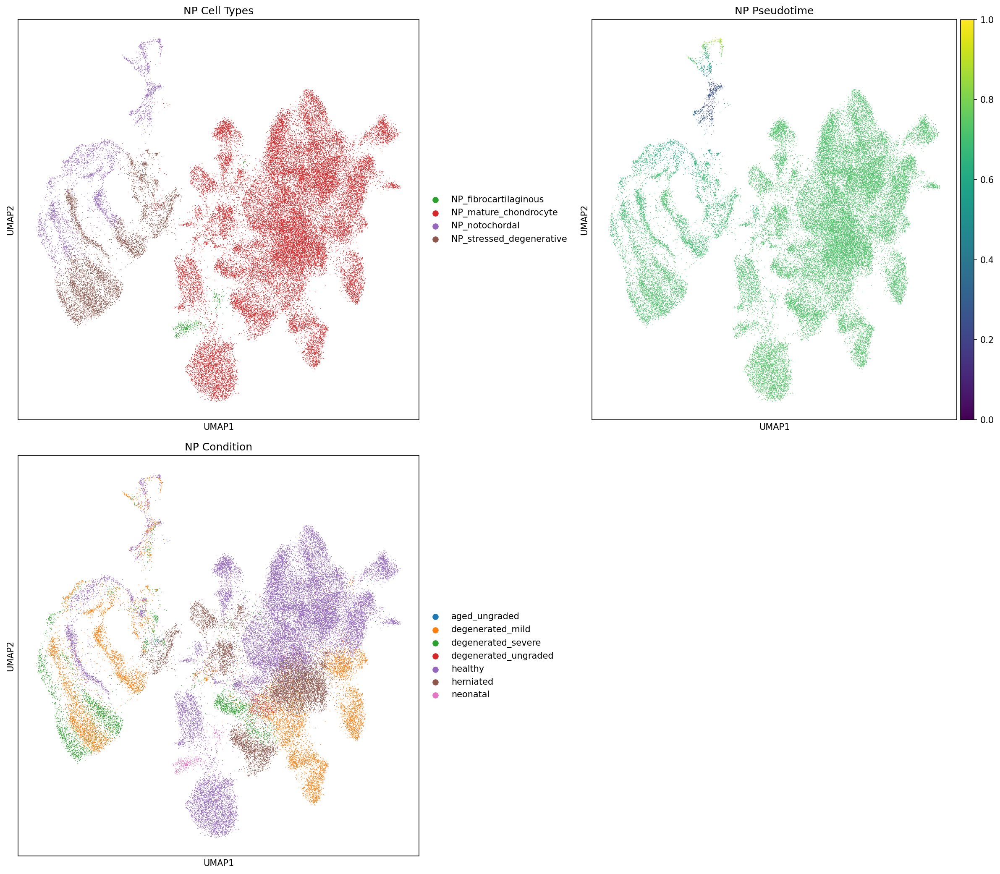

Module 08: Trajectory & Dynamics Report
Generated: 2026-03-05 21:25
NP Compartment


Pseudotime Correlations
| Test | Statistic | P-value | N |
|---|
| pseudotime_vs_condition_ordinal | rho=-0.207 | 0.0e+00 | 50000 |
| pseudotime_healthy_vs_degenerated | U=255019296 | 0.0e+00 | 40742 |
| pseudotime_vs_condition_NP_notochordal | rho=-0.034 | 4.5e-02 | 3389 |
| pseudotime_vs_condition_NP_mature_chondrocyte | rho=-0.041 | 3.6e-16 | 40094 |
| pseudotime_vs_condition_NP_stressed_degenerative | rho=0.336 | 5.0e-161 | 6118 |
| pseudotime_vs_condition_NP_fibrocartilaginous | rho=-0.170 | 6.5e-04 | 399 |
Trajectory Genes: 500 total
| Gene | rho | padj | Program |
|---|
| LCP1 | -0.583 | 0.0e+00 | late_down |
| BCL2A1 | -0.532 | 0.0e+00 | late_down |
| LYZ | -0.531 | 0.0e+00 | late_down |
| BASP1 | -0.522 | 0.0e+00 | late_down |
| RAC2 | -0.506 | 0.0e+00 | late_down |
| FCER1G | -0.505 | 0.0e+00 | late_down |
| CXCL8 | -0.503 | 0.0e+00 | late_down |
| CTSS | -0.502 | 0.0e+00 | late_down |
| C5AR1 | -0.486 | 0.0e+00 | late_down |
| LAPTM5 | -0.479 | 0.0e+00 | late_down |
| EVI2B | -0.476 | 0.0e+00 | late_down |
| NCF2 | -0.458 | 0.0e+00 | late_down |
| GCA | -0.429 | 0.0e+00 | late_down |
| FGFBP2 | 0.428 | 0.0e+00 | late_up |
| SRGN | -0.425 | 0.0e+00 | late_down |
| SELENOM | 0.419 | 0.0e+00 | late_up |
| S100P | -0.418 | 0.0e+00 | late_down |
| GMFG | -0.416 | 0.0e+00 | late_down |
| S100A1 | 0.412 | 0.0e+00 | late_up |
| TMSB4X | -0.410 | 0.0e+00 | late_down |
Sensitivity Check (scVI embedding)

AF Compartment


Pseudotime Correlations
| Test | Statistic | P-value | N |
|---|
| pseudotime_vs_condition_ordinal | rho=-0.177 | 0.0e+00 | 50000 |
| pseudotime_healthy_vs_degenerated | U=257554112 | 0.0e+00 | 41960 |
| pseudotime_vs_condition_AF_outer | rho=-0.193 | 0.0e+00 | 40361 |
| pseudotime_vs_condition_AF_inner | rho=-0.043 | 3.4e-04 | 6925 |
| pseudotime_vs_condition_AF_mechanical_stress | rho=-0.272 | 2.7e-47 | 2714 |
Trajectory Genes: 500 total
| Gene | rho | padj | Program |
|---|
| PRELP | -0.781 | 0.0e+00 | late_down |
| FTH1 | 0.730 | 0.0e+00 | late_up |
| FGFBP2 | -0.701 | 0.0e+00 | late_down |
| FMOD | -0.699 | 0.0e+00 | late_down |
| COMP | -0.685 | 0.0e+00 | late_down |
| SERPINA1 | -0.673 | 0.0e+00 | late_down |
| FOSB | -0.673 | 0.0e+00 | late_down |
| RNASEK | 0.673 | 0.0e+00 | late_up |
| ACAN | -0.649 | 0.0e+00 | late_down |
| SCRG1 | -0.640 | 0.0e+00 | late_down |
| KLF4 | -0.639 | 0.0e+00 | late_down |
| GABARAP | 0.619 | 0.0e+00 | late_up |
| OGN | -0.609 | 0.0e+00 | late_down |
| TMSB10 | 0.608 | 0.0e+00 | late_up |
| RGCC | -0.606 | 0.0e+00 | late_down |
| TRAPPC5 | 0.606 | 0.0e+00 | late_up |
| S100A6 | 0.602 | 0.0e+00 | late_up |
| RPL17 | 0.598 | 0.0e+00 | late_up |
| HSPA1A | -0.597 | 0.0e+00 | late_down |
| TMSB4X | 0.596 | 0.0e+00 | late_up |
RNA Velocity
RNA velocity could not be computed.
No spliced/unspliced count layers found in the integrated data.
This is expected for public scRNA-seq datasets that only provide final count matrices.
Computing velocity would require reprocessing from BAM/fastq files using velocyto or STARsolo.
Given that IVD is a slow-turnover tissue, velocity results may be uninformative even if computed.
Human Checkpoint Questions
- Does the inferred trajectory make biological sense?
- Does pseudotime align with healthy → degenerated?
- Are there branch points suggesting divergent cell fates?
- Do gene programs along the trajectory reveal staged degeneration?
- Should trajectory findings redefine cell states?